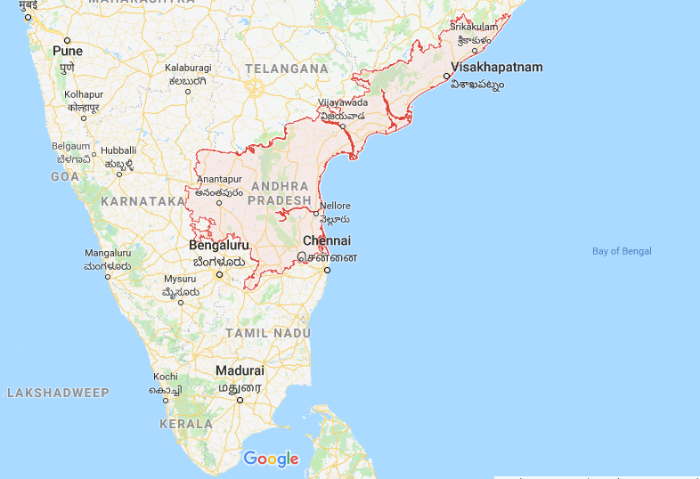

Andhra Pradesh is one of the 29 states of India, situated on the southeastern coast of the country. The state is the eighth-largest state in India covering an area of 162,970 km2 (62,920 sq mi). As per 2011 Census of India, the state is tenth-largest by population with 49,386,799 inhabitants. On 2 June 2014, the north-western portion of Andhra Pradesh was separated to form a new state of Telangana. Andhra Pradesh's longtime capital, Hyderabad, was transferred to Telangana as part of the division. However, in accordance with the Andhra Pradesh Reorganisation Act, 2014, Hyderabad will remain the de jure capital of both Andhra Pradesh and Telangana states for a period of time not exceeding10 years. The new riverfront de facto capital, Amaravati, is under the jurisdiction of the Andhra Pradesh Capital RegionDevelopment Authority (APCRDA). The Gross State Domestic Product (GSDP) of the state in the 2016–2017 financial year at current prices stood at ₹6,800.3 billion (US$110 billion). The state has a coastline of 974 km (605 mi) with jurisdiction over nearly 15,000 km2 territorial waters, the second longest coastline among the states of India after Gujarat. It is bordered by Telangana in the north-west, Odisha in the north-east, Karnataka in the west, Tamil Nadu in the south and the water body of Bay of Bengal in the east. A small enclave of 30 km2 (12 sq mi) of Yanam, a district of Puducherry, lies south of Kakinada in the Godavari delta on the east side of the state.Andhra Pradesh is composed of three major regions: Coastal Andhra, Uttarandhra and Rayalaseema, in the inland southwestern part of the state. These three regions comprise 13 districts, with 3 in Uttarandhra, 6 in Coastal Andhra and 4 in Rayalaseema. Visakhapatnam, located on the Bay of Bengal in North Coastal Andhra is the largest city and commercial hub of the state with a GDP of $43.5 billion, followed in population and GDP by Vijayawada, which is located on the bank of Krishna River and which has a GDP of $3 billion as of 2010.Andhra Pradesh hosted 121.8 million visitors in 2015, a 30% growth in tourist arrivals over the previous year. The Tirumala Venkateswara Temple in Tirupati is one of the world's most visited religious sites, with 18.25 million visitors per year. Other pilgrimage centers in Andhra Pradesh include the Srikalahasteeswara Temple at Srikalahasti, the Ameen Peer Dargah in Kadapa, the Mahachaitya at Amaravathi, and the Kanaka Durga Temple in Vijayawada, while the state's natural attractions include the beaches of Visakhapatnam, hill stations such as the Araku Valley and Horsley Hills, and the island of Konaseema in the Godavari River delta.
| Language: | Telugu |